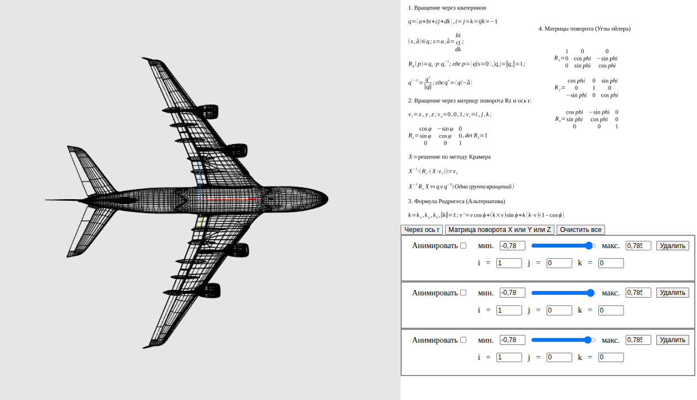

Тема. Интерактивный исследовательский стенд для количественного сравнения двух моделей 3D-вращения (кватернион и матрица поворота) и двух движков вычислений (нативный WebAssembly, скомпилированный из Rust, и чистый JavaScript) на одинаковой геометрии и идентичных алгоритмах.
Цель. Получить воспроизводимые измеримые данные, на основе которых можно обоснованно выбирать модель вращения и среду вычислений для задач реального времени в браузере.
Результат. Реализован стенд (Rust → WASM → Vite → Three.js), переключатель движка WASM/JS, оверлей метрик реального времени и встроенная бенчмарк-сессия (300 кадров × 4 сочетания). По двум моделям (50 970 и 326 786 вершин буфера) показано: WASM устойчиво быстрее JS на 25–56 % по среднему времени кадра при полной идентичности математического результата (max|WASM−JS| ≈ 10⁻⁷); сложность линейна по числу вершин; удельное преимущество WASM компаундится в запас +0,9…+2,4 млн вершин в бюджете 60 FPS.
Ключевые слова: 3D-вращение, кватернион, матрица поворота, формула Родрига, WebAssembly, Rust, JavaScript, Three.js, WebGL, бенчмарк, производительность, масштабируемость.
Вращение трёхмерных объектов — одна из самых частых операций в компьютерной графике, робототехнике, играх и симуляторах. На практике её реализуют двумя принципиально разными способами: матрицами поворота (Rx, Ry, Rz) — классический подход линейной алгебры — и кватернионами — компактным представлением, свободным от гимбал-лока и удобным для композиции и интерполяции вращений.
Параллельно стоит инженерный вопрос выбора среды вычислений для веба: чистый JavaScript универсален, но интерпретируем/JIT-компилируем; WebAssembly (WASM) компилируется из Rust в близкий к нативному байткод и обещает выигрыш на «горячих» численных циклах. Для приложений реального времени (≥ 60 кадров/с) при больших объёмах геометрии (десятки и сотни тысяч вершин) разница между этими вариантами может оказаться критичной. Однако в учебной литературе она обычно постулируется без измеримого сравнения на одинаковых алгоритмах.
WebAssembly закрепился как стандарт ускорения вычислений в вебе, поэтому обоснованный выбор «WASM vs JS» — практический инженерный вопрос для любого 3D-редактора, CAD-вьюера или браузерного симулятора. Сравнение кватернионов и матриц — фундаментальная тема, и стенд даёт воспроизводимую методику замера, а не только теоретическое сопоставление. Результат имеет и коммерческую ценность как переиспользуемый компонент вращения геометрии.
Цель работы — создать интерактивный исследовательский стенд, который на одной и той же геометрии и одинаковых алгоритмах позволяет количественно сравнить две модели вращения (кватернион vs матрицы) и два движка вычислений (WASM vs JS), и на основе измерений сделать обоснованные выводы о применимости каждого сочетания.
src/math/rotations-js.js).WASM / JS и селектор модели.model.json, model.h.json) и
оформить сравнительный анализ с выводами и рекомендациями.| ID | Формулировка |
|---|---|
| H1 | Нативный WASM (Rust) даёт меньшее время вычисления кадра, чем эквивалентный чистый JavaScript, и преимущество возрастает с числом вершин. |
| H2 | Вращение одной матрицей Rx/Ry/Rz дешевле одного поворота кватернионом на ту же вершину (меньше арифметических операций). |
| H3 | JS-реализация даёт результат, идентичный WASM в пределах точности f32 (расхождение порядка 10⁻⁵…10⁻⁶) — сравнивается одна и та же математика. |
| H4 | Время кадра растёт линейно по числу вершин для всех четырёх сочетаний. |
| H5 | На малом числе вершин накладные расходы маршалинга JS↔WASM могут нивелировать выигрыш; преимущество WASM становится явным начиная с некоторого порога N. |
В трёхмерной графике вращение твёрдого тела представляют несколькими способами, каждый со своими достоинствами и недостатками.
Вращение применяется к каждой вершине каждый кадр. При 60 кадрах/с и сотнях тысяч вершин это миллионы операций в секунду — типичная «горячая точка», на которой и проявляется разница между WASM и JS, кватернионом и матрицей. Именно эту разницу измеряет стенд.
| Решение | Модель вращения | Движок | Открытость замеров |
|---|---|---|---|
| Three.js | Кватернионы + матрицы | JavaScript (WASM в аддонах) | Нет встроенного сравнения |
| Babylon.js | Кватернионы + матрицы | JS; WASM для физики | Нет |
| Unity | Кватернионы | Нативный C++/C# (Burst+SIMD) | Внутренние профайлеры |
| glMatrix | Матрицы и кватернионы | Чистый JS (оптимизирован под JIT) | Микробенчмарки в репозитории |
| Наш стенд | Кватернион и матрица, переключаемо | WASM и JS, переключаемо | Встроенная бенчмарк-сессия |
Готовые библиотеки фиксируют выбор движка и модели вращения и не дают встроенного инструмента для их сравнения на одинаковой нагрузке. Наш стенд: (1) реализует обе модели вращения и оба движка с переключением «на лету»; (2) гарантирует идентичность алгоритмов (JS-fallback — построчный аналог Rust); (3) предоставляет воспроизводимую методику замера (300 кадров, прогрев, статистика, проверка корректности); (4) экспортирует результаты в готовый для оформления текстовый формат. Именно это сочетание делает работу исследовательской, а не очередной обёрткой над существующей библиотекой.
Единственный актор — Исследователь. Каждый сценарий описывает путь получения измеримого результата.
model.json (≈51 тыс.) и model.h.json (≈327 тыс.),
сравнить ускорение и абсолютное время кадра.| ID | Требование | Статус |
|---|---|---|
| FR-1 | Загрузка 3D-модели из JSON (вершины + рёбра) с нормализацией | ✅ |
| FR-2 | Каркасный рендеринг модели в Three.js (LineSegments) | ✅ |
| FR-3 | Управление камерой мышью (вращение, зум, панорама) | ✅ |
| FR-4 | Вращение кватернионом: добавление узлов «ось + диапазон угла», композиция | ✅ |
| FR-5 | Вращение матрицами Rx/Ry/Rz: последовательное применение | ✅ |
| FR-6 | Автоматическая анимация прогресса угла (bounce) | ✅ |
| FR-7 | Визуализация оси результирующего вращения (стрелка) | ✅ |
| FR-8 | Очистка всех вращений | ✅ |
| FR-9 | Переключатель движка вычислений WASM / JS | ✅ |
| FR-10 | JS-fallback, алгоритмически идентичный WASM-ядру | ✅ |
| FR-11 | Оверлей метрик: движок, FPS, время кадра, число вершин | ✅ |
| FR-12 | Селектор модели (model.json / model.h.json) | ✅ |
| FR-13 | Бенчмарк-сессия: 300 кадров × 4 сочетания, прогрев, статистика | ✅ |
| FR-14 | Проверка корректности max|WASM−JS| | ✅ |
| FR-15 | Экспорт результатов в текстовый формат === BENCHMARK SESSION === | ✅ |
| FR-16 | Сравнительная таблица результатов и коэффициент ускорения в UI | ✅ |
| ID | Категория | Требование |
|---|---|---|
| NFR-1 | Производительность | Интерактивная работа ≥ 60 FPS на model.json в режиме WASM |
| NFR-2 | Производительность | Время кадра (compute) измеримо и сглажено (EMA) |
| NFR-3 | Точность | Расхождение JS и WASM не превышает предела f32 (< 10⁻³) |
| NFR-4 | Воспроизводимость | Бенчмарк фиксирован: 300 кадров, прогрев 30, единый набор сочетаний |
| NFR-5 | Память | Inplace-вращение без аллокаций на кадр |
| NFR-6 | Переносимость | Современный браузер с поддержкой WASM и WebGL |
| NFR-7 | Развёртывание | Статическая сборка npm run build, без серверной части и БД |
| NFR-8 | Сопровождаемость | Чёткое разделение слоёв (UI / Math-JS / Compute) |
| NFR-9 | Корректность кода | Rust-ядро проходит cargo clippy без предупреждений |
Проект построен как трёхслойная вычислительно-визуальная система; слои разделены по ответственности и направлению потока данных.
┌─────────────────────────────────────────────────────────────┐
│ Presentation Layer (UI / визуализация) │
│ • Vite + кастомный Component (src/utils/Component.js) │
│ • Three.js Canvas, OrbitControls │
│ • Панель управления, переключатель движка, селектор модели │
│ • Оверлей метрик, бенчмарк-сессия │
├─────────────────────────────────────────────────────────────┤
│ Math-JS Layer (координация и состояние) │
│ • buildResultQuaternion() — композиция кватернионов │
│ • quatToAxisAngle() — извлечение оси и угла │
│ • updateUnits() — анимация прогресса │
│ • normalizeModel() — подготовка геометрии │
├─────────────────────────────────────────────────────────────┤
│ Compute Layer (движки вычислений, переключаемо) │
│ rotate_vertices_axis_angle_inplace [WASM | JS] │
│ rot_by_rotmat_inplace [WASM | JS] │
│ rotation-core/src/lib.rs ←→ src/math/rotations-js.js │
└─────────────────────────────────────────────────────────────┘
↕
Float32Array (общий буфер вершин)
↕
THREE.BufferGeometry → GPU → WebGL
Ключевой архитектурный приём — «единая точка переключения»: в
WebGL/index.js введены диспетчеры rotateQuat() и
rotateMat(), скрывающие выбор движка. Остальной код (анимация, метрики,
бенчмарк) не зависит от того, какой движок активен — поэтому сравнение остаётся честным.
При загрузке модель нормализуется и разворачивается в плоский эталонный массив
baseVertices : Float32Array вида [x₁,y₁,z₁,
x₂,y₂,z₂, …]. Каждый кадр рабочий буфер workingVertices сбрасывается к
эталону и поворачивается заново — это исключает накопление ошибки между кадрами.
Измеряется только блок вращения:
workingVertices.set(baseVertices); // сброс к эталону (вне замера) const t0 = performance.now(); rotateQuat() / rotateMat(); // ← измеряемый блок (WASM или JS) dt = performance.now() - t0; positionAttr.array.set(working); // push на GPU (вне замера) positionAttr.needsUpdate = true;
Сброс буфера и передача на GPU — общие для обоих движков и в замер не входят. При
WASM-вызове Float32Array копируется в линейную память WASM и обратно (через
wasm-bindgen); этот накладной расход — часть честной цены WASM и включён в
измеряемый блок.
Дана ось a и угол θ. Ось нормируется, строится единичный кватернион, поворот вектора выполняется по эквивалентной формуле Родрига (меньше операций, та же суть). Пусть u = (qₓ, q_y, q_z):
Узлы вращения объединяются произведением кватернионов
(buildResultQuaternion()), результат переводится обратно в ось-угол
(quatToAxisAngle()) и применяется к вершинам единым вызовом ядра. Стоимость —
≈ 15–20 арифметических операций на вершину.
Поворот вокруг одной координатной оси. При c = cosθ, s = sinθ:
Стоимость — 4 умножения + 2 сложения на вершину (синус/косинус считаются один
раз на вызов), то есть заметно дешевле кватерниона. Обе модели реализованы идентично в Rust
(rotation-core/src/lib.rs) и JS (src/math/rotations-js.js).
| Критерий | Кватернион | Матрица Rx/Ry/Rz |
|---|---|---|
| Операций на вершину | ~15–20 | ~6 |
| Гимбал-лок | отсутствует | возможен при композиции Эйлера |
| Композиция | произведение кватернионов | произведение матриц |
| Накопление ошибки | мала (нормировка) | требует реортогонализации |
| Интерполяция | SLERP (гладкая) | сложнее |
| Память | 4 числа | 9 чисел |
Точность f32 против f64. Rust-ядро выполняет операции в
f32; JS — в f64, но результат усекается до f32 при
записи в Float32Array. Поэтому расхождение результатов лежит на уровне
округления f32, что подтверждает идентичность моделей (гипотеза H3).
Математическое ядро реализовано на чистом Rust и скомпилировано в WebAssembly через
wasm-pack build --target web. Две экспортируемые функции работают
inplace над общим буфером вершин:
rotate_vertices_axis_angle_inplace (кватернион) и
rot_by_rotmat_inplace (матрица Rx/Ry/Rz). Применение мутабельных ссылок
(&mut) и прямой записи в линейную память минимизирует аллокации и давление
на сборщик мусора браузера.
Для честного сравнения создан JS-fallback (src/math/rotations-js.js) —
построчный аналог Rust-ядра. Функции rotateVerticesAxisAngleJS
и rotByRotmatJS повторяют те же арифметические выражения и так же работают
inplace над Float32Array. Идентичность подтверждена численно:
max|WASM−JS| ≈ 3·10⁻⁵ (предел точности f32).
Выбор реализации управляется флагом engineMode ∈ {'wasm','js'} через
диспетчеры — это единственное место, которое различается между режимами, поэтому именно его
время и измеряет бенчмарк.
Модель отображается каркасом (THREE.LineSegments поверх
BufferGeometry). Интерфейс выполнен на тонком собственном классе
Component (без внешнего фреймворка) и включает панель управления узлами
вращения, переключатель движка, селектор модели, оверлей метрик и блок бенчмарка.

Измеряется время блока вычисления вращения за один кадр (в миллисекундах) — длительность вызова функции вращения, применённой ко всем вершинам модели. Это единственная часть кадра, которая различается между WASM и JS. Из замера исключены сброс буфера, передача данных на GPU, рендеринг Three.js и работа OrbitControls.
| Параметр | Значение |
|---|---|
| Измеряемых кадров | 300 на каждое сочетание |
| Прогрев (warmup) | 30 кадров (не учитываются) |
| Сочетаний | 4: {Кватернион, Матрица} × {WASM, JS} |
| Нагрузка кватерниона | поворот вокруг оси (1,1,1)/√3, угол свипуется 0…2π |
| Нагрузка матрицы | поворот Rx, угол свипуется 0…2π |
| Модели | model.json (50 970) и model.h.json (326 786 верш.) |
| Инструмент | performance.now() |
Зачем прогрев. Первые вызовы JS проходят интерпретацию/JIT-компиляцию, а кэши процессора ещё «холодные»; 30 холостых кадров стабилизируют замер. Зачем свип угла. Меняющийся угол не даёт компилятору «схитрить» на константах и приближает нагрузку к реальной анимации. Контроль корректности. После замеров стенд вычисляет max|WASM−JS| — максимальное покомпонентное расхождение результата на одном кадре (угол π/3).
performance.now() до 1 мс
(privacy.reduceTimerPrecision), поэтому в собранных данных
Min = 0 и Max целочисленны.
Среднее по 300 кадрам остаётся репрезентативным за счёт дизеринга квантования;
относительные выводы (ускорение, линейность) устойчивы.Данные двух бенчмарк-сессий от 23.06.2026. Окружение: Firefox 149.0, Ubuntu Linux x86_64. 300 кадров на сочетание, прогрев 30 кадров.
| Метод | Движок | Ср. FPS | Min, мс | Max, мс | Avg, мс |
|---|---|---|---|---|---|
| Кватернион | WASM | 5454,5 | 0,000 | 2,000 | 0,183 |
| Кватернион | JS | 4225,4 | 0,000 | 2,000 | 0,237 |
| Матрица | WASM | 6521,7 | 0,000 | 1,000 | 0,153 |
| Матрица | JS | 4918,0 | 0,000 | 1,000 | 0,203 |
| Метод | Движок | Ср. FPS | Min, мс | Max, мс | Avg, мс |
|---|---|---|---|---|---|
| Кватернион | WASM | 854,7 | 0,000 | 2,000 | 1,170 |
| Кватернион | JS | 684,9 | 0,000 | 3,000 | 1,460 |
| Матрица | WASM | 1219,5 | 0,000 | 2,000 | 0,820 |
| Матрица | JS | 781,3 | 0,000 | 3,000 | 1,280 |
| Модель вращения | model.json | model.h.json |
|---|---|---|
| Кватернион | ×1,29 | ×1,25 |
| Матрица | ×1,33 | ×1,56 |
| Модель вращения | model.json | model.h.json |
|---|---|---|
| Кватернион | 1,490·10⁻⁷ | 2,384·10⁻⁷ |
| Матрица | 5,960·10⁻⁸ | 1,192·10⁻⁷ |
WASM быстрее во всех сочетаниях; для матрицы преимущество растёт с числом вершин
(×1,33 → ×1,56). Расхождение результатов — на уровне точности f32
(≈ 10⁻⁷): движки дают идентичный результат, сравнивается одна и та же математика.
| Сочетание | нс/вершину | Рост времени | Близость к линейному |
|---|---|---|---|
| WASM · Кватернион | 3,58 | ×6,39 | почти идеально (6,41) |
| JS · Кватернион | 4,47 | ×6,16 | линейно |
| WASM · Матрица | 2,51 | ×5,36 | сублинейно (амортизация overhead) |
| JS · Матрица | 3,92 | ×6,31 | линейно |
Рост времени практически совпадает с ростом числа вершин — сложность линейна по N (гипотеза H4 подтверждена).
Разрыв на конкретном кадре умеренный (современный JIT Firefox силён), однако удельное преимущество WASM по стоимости одной вершины при росте сцены компаундится в большой абсолютный запас геометрии в бюджете кадра реального времени.
| Сочетание | @60 FPS | @120 FPS |
|---|---|---|
| WASM · Матрица | 6,64 млн | 3,32 млн |
| JS · Матрица | 4,26 млн | 2,13 млн |
| WASM · Кватернион | 4,66 млн | 2,33 млн |
| JS · Кватернион | 3,73 млн | 1,86 млн |
На матричном вращении WASM держит реальное время на сцене, которая на +2,39 млн вершин (+56 %) крупнее, чем доступно чистому JS; для кватерниона запас +0,92 млн (+25 %). Экстраполяция консервативна: реальный отрыв обычно больше — на слабых устройствах JIT менее агрессивен, WASM поддерживает SIMD (не задействован в текущей сборке), не зависит от деоптимизаций JIT и пауз GC, а замер ограничен квантованием таймера в 1 мс.
| ID | Вердикт | Числовое обоснование |
|---|---|---|
| H1 | ✅ / 🟡 уточнена | WASM быстрее везде (×1,25–1,56); рост с N — для матрицы (×1,33→×1,56), у кватерниона стабильно |
| H2 | ✅ подтверждена | матрица дешевле во всех 4 случаях на 12–30 % |
| H3 | ✅ подтверждена | max|WASM−JS| ≈ 10⁻⁷ (6·10⁻⁸…2,4·10⁻⁷) |
| H4 | ✅ подтверждена | рост времени ×6,4 при росте вершин ×6,41 |
| H5 | ❌ опровергнута (в диапазоне) | WASM выгоден уже при 50k вершин; порог, если есть, ниже исследованного диапазона |
Главный вывод. Нативное WASM-ядро (Rust) устойчиво превосходит эквивалентный JavaScript на вращении больших массивов вершин — на 25–56 % по среднему времени кадра — при полной идентичности математического результата. Наилучшее сочетание по скорости — WASM + матрица; наиболее универсальное по функциональности — WASM + кватернион.
performance.now() до
1 мс — абсолютные значения зашумлены (средние по 300 кадрам репрезентативны).
Развитие: замер в нескольких браузерах и на нескольких машинах.В рамках курсового проекта по дисциплине «Программная инженерия» (траектория «Исследование») разработан интерактивный стенд, который впервые в учебном контексте даёт воспроизводимую методику количественного сравнения моделей 3D-вращения и движков вычислений на идентичных алгоритмах. Все функциональные требования (FR-1…FR-16) реализованы; собраны и проанализированы данные двух бенчмарк-сессий.
Подтверждено, что нативное WASM-ядро устойчиво быстрее эквивалентного JavaScript при сохранении полной математической корректности, что сложность вращения линейна по числу вершин, а удельное преимущество WASM компаундится в запас в миллионы вершин в бюджете реального времени. Результат имеет прикладную ценность как переиспользуемый компонент вращения геометрии для 3D-редакторов, CAD-вьюеров и браузерных симуляторов, с возможностью подбирать баланс «скорость ↔ совместимость» переключением движка.
ПОЯСНИТЕЛЬНАЯ_ЗАПИСКА.html в браузере (Chrome/Firefox) →
Печать (Ctrl+P) → принтер «Сохранить как PDF» →
поля «По умолчанию», масштаб 100 %, включить фоновую графику →
сохранить как ПОЯСНИТЕЛЬНАЯ_ЗАПИСКА.pdf. Разрывы страниц, формулы, таблицы и
диаграммы уже свёрстаны под печать A4.